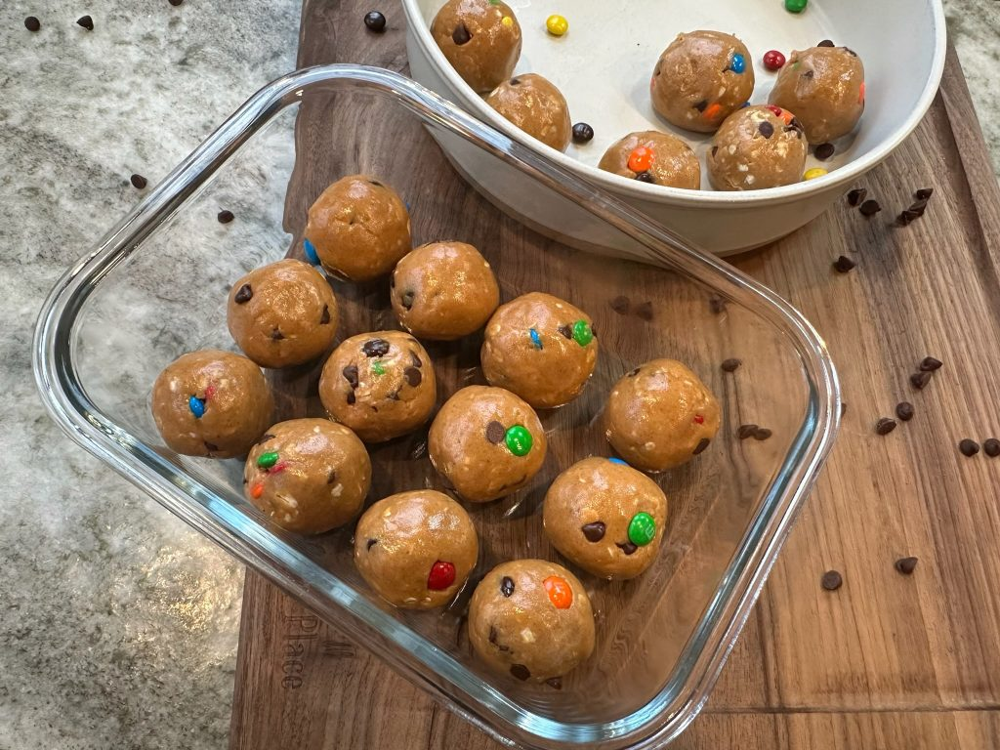

Monster Bites

Description
Who doesn't love a tasty, on the go snack? Let's make some yummy blender muffins that are high in protein. Its a very easy recipe that will keep your kids coming back for more!
Ingredients
- 1/2 cup honey
- 1/2 cup peanut butter
- 2 tsp vanilla extract
- 3/4 cup peanut butter powder
- 1/2 cup whey protein powder unflavored or vanilla
- 3/4 cup quick oats
- 1/3 cup mini m&m's
Steps
- In a mixing bowl, combine honey, peanut butter, and vanilla extract.
- Add peanut butter and 1/2 cup of your protein powder.
- Mix in oats and m&m's.
- Roll into about 18 balls and refrigerate for texture.